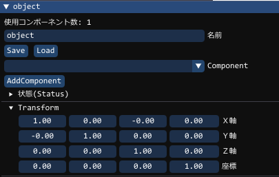
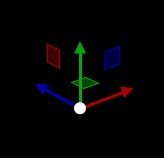

Matrixとは
matrixで表され、 姿勢と位置とサイズ が同時に入っている変数ですBPのマトリクスは 4 x 4 (16要素)の float で構成されています
Objectごとに持っており、 BPでは、以下の所に隠れて表示されています

float4 となっているが上から、ベクトルが4つあると思っていただきたい3Dでのベクトル が float3の(X,Y,Z)で 方向 を表すことがわからない場合は、 Vector の項目を確認してください
| matrixの要素 | ||||
|---|---|---|---|---|
| X軸ベクトル | X | Y | Z | 必ず0.0 |
| Y軸ベクトル | X | Y | Z | 必ず0.0 |
| Z軸ベクトル | X | Y | Z | 必ず0.0 |
| 位置ベクトル | X | Y | Z | 0.0か1.0 |
ここからMatrixはいったいどのようなものか、その答えは・・・

こいつです
Matrix は難しくてわからん、という人は多いですが、実はこの矢印、だったのです…。
ということで今から難しく考えているところを 簡単 に考えていきましょう。
マトリクスって数値を知っておく必要があるの?
全く必要なし。マトリクスの中にはそっち向いている、位置はここ、という情報が入っているます。
ただマトリクスの中の数値なんてなんて知る必要はないです。
先生たちも、今実際ゲーム中のキャラ見て、「あー、いまこんな感じね」、という事しか考えてません。
マトリクスはどこにあるの? 設定とかどうするの?
以下のようにすると、マトリクスを取得できます。auto mat = obj->GetMatrix(); //< objのマトリクスをmatに入れますまた、設定はMatrix一括でしか行えず、
obj->SetMatrix( mat ); //< objのマトリクスにmatを設定しますBPでは、取得と設定は、基本これしかしないです。
設定するマトリクスはどうやって作るの?
移動のマトリクスを作れますauto move = matrix::translate( {1,0,0} ); //< Xの方向に1移動させるY軸回転のマトリクスを作れます
auto rot = matrix::rotateY( 角度 * DegToRad ); //< Y軸で角度分回転しますauto型でとらえていますが、matrix型となります。
これらを実践では掛けて使用します。
obj->AddTranslate({1,0,0})とほぼ同じことをしたい
auto move = matrix::translate( {1,0,0} ); //< Xの方向に1移動
obj->SetMatrix( mul( obj->GetMatrix(), move ) );matrixの掛け算は、* でないく、mul()を使います。
auto C = mul( A, B );Bを強調している理由は次でわかります
obj->AddTranslate({1,0,0}, true)とほぼ同じことをしたい
auto move = matrix::translate( {1,0,0} ); //< Xの方向に1移動
obj->SetMatrix( mul( move, obj->GetMatrix() ) );こうすることでobjの向きのX軸で移動するのです
auto C = mul( A, B );つまり Bがあくまでベースとなる軸 と考えてください。
先ほどの上の項目は、あくまでBに配置されているのは移動行列で、
グローバルと一致した方向を示していることがわかるかと思います
obj->AddRotationAxisXYZ({0,1,0})とほぼ同じことをしたい
auto rot = matrix::rotateY( 1 * DegToRad ); //< Y軸1度回転
obj->SetMatrix( mul( obj->GetMatrix(), rot ) );BPでは現在ローカル回転は用意していません。
Y軸が傾いた際のobjのY軸で回転するには、
auto rot = matrix::rotateY( 1 * DegToRad ); //< Y軸1度回転
obj->SetMatrix( mul( rot, obj->GetMatrix() ) );BP関数では不可能。複数の動作を一回で反映させる方法
上の動作、移動と回転を同時に行うと計算が軽くなりますauto rot = matrix::rotateY( 1 * DegToRad ); //< Y軸1度回転
auto move = matrix::translate( {1,0,0} ); //< Xの方向に1移動
// Update前にこれを計算しておく(掛け合わせの順番で動作は変わります)
auto two_calc = mul( move, rot );アップデートでは以下を行う(通常動作は1回になるので軽くなる)
obj->SetMatrix( mul( obj->GetMatrix(), two_calc ) );角度とポジション別でええやん、ややこしいMatrixとか必要なくない?
実際PS/XBox/Swichでの3Dプログラムでは角度で計算されることはまずないです。角度計算は遅いんです。 よってBPはそこが遅い。
実開発では角度なんてややこしくなるだけで使いません!
「そんなわけないだろ!」 と感じる人は3Dの素人です。
ではなぜ BPが角度で指定 するプログラム環境を用意しているのか?
それは初めて3Dに触れる学生さんたちができるだけ
迷わないように使えるようにするためです。
普段よく使われる角度とは違うラジアンの存在、
4x4の聞いたこともない回転移動スケールが入ったマトリクスの存在、
複数の座標空間の3Dの考え方と計算、
これらを前提で3D授業が始まると、私の経験上、
始まったタイミングで既に終焉を迎える人が多々いたためです。
そこでまずは3Dになれる ことが大事だと考えました。
Matrixは非常に効率的な形をしています。
実は 回転と移動はまとまってないと大変 という場面が多いのです
auto obj = Scene::CreateObjectPtr<Object>() //< Object作成
->SetName( u8"オブジェクトA" ) //< 名前設定
->SetRotation( { 0, 30, 0 } ); //< Y軸で30度回転
->SetTranslate( { 5, 0, 3 } ); //< X軸,Z軸でに少し移動位置も移動して、しかも回転しているので、オプションのような感じで周りを回るはずですが、
これ、角度とポジションだけで可能ですか?
やるとしても、回転するときにポジションは円のように移動させる必要もあるし、
さらにBが移動や回転したらもうAの計算はかなり無理な感じがしませんか?
でもこれMatrixなら ほぼ一撃 でできちゃうんです。
Matrixにしたい理由は、
他のオブジェクトの影響をうけても、移動や回転もさせたいから
これをやるためといっても過言ではないです
さらにAがくっついたオブジェクトBがさらに違うオブジェクトCにくっついて回っていたとしても問題ないです。
本来マトリクスは実はこの部分の ややこしさを解決する味方 なのです
ObjectAをObjectBに引っ付けて動作させたい
auto obj_b_mat = obj_b->GetMatrix();
// BPでは、当たりなどの移動処理が終了した後、PostUpdate()にて行う必要があります。
// 最終の表示位置を設定します(設定しても1frameしか有効になりません)
// これを使うオブジェクトobj内にComponentSpringArm、ComponentAttachModelがあると動作は保証されません
obj->SetWorldMatrix( mul( obj->GetMatrix(), ob_b_mat ) );正しくは、フレームレートに合わせた回転が必要となります。(BP関数は自動的に行います)
これをやらないと144hzのモニターのものと、60hzのモニターにつなぐことで
処理スピードが変わってしまいます。 移動や、回転数値に
float delta = GetDeltaTime60();※ ここでは、Matrixを矢印ととらえたため、
あえてスケールを説明しておりません。
(見た目の矢印の大きさが可変しないためです)
実際にはMatrixには、スケールも存在しています。
X軸、Y軸、Z軸は、1の大きさを普通としますが、別に数値を変えると軸の大きさは可変になるはずです。
つまり、軸の大きさを1から変化させることでスケールとなります。X,Y,Zそれぞれの方向に大きさを持っています。